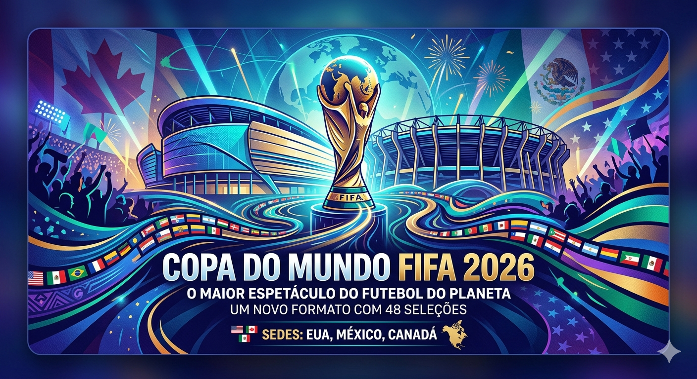

A maior e mais inovadora edição da história do futebol mundial
A edição de 2026 da Copa do Mundo FIFA marca um ponto de virada histórico no esporte. Realizada entre os meses de junho e julho, a competição espalha-se por toda a América do Norte e traz transformações massivas na estrutura clássica do torneio, abraçando a diversidade global com um número recorde de participantes.

Pela primeira vez na história, o torneio é coorganizado por três nações diferentes, dividindo as partidas por 16 cidades-sede estrategicamente selecionadas:
O país abriga o maior número de cidades do torneio (10 no total). A grande final da competição está marcada para acontecer no espetacular MetLife Stadium, em Nova Jersey.
Torna-se o primeiro país a receber o torneio em três edições diferentes (1970, 1986 e 2026). O icônico Estádio Azteca na Cidade do México sedia a partida de abertura.
Estreia como anfitrião da competição masculina principal, trazendo estádios de ponta nas vibrantes cidades de Toronto e Vancouver para a celebração.
Esqueça o modelo antigo. A Copa do Mundo expandiu suas fronteiras para incluir muito mais sonhos e nações na disputa pelo troféu mais cobiçado da Terra.
| Característica | Formato Antigo (Até 2022) | Novo Formato (2026) |
|---|---|---|
| Total de Seleções | 32 países | 48 países |
| Número de Jogos | 64 partidas | 104 partidas |
| Fase de Grupos | 8 grupos de 4 equipes | 12 grupos de 4 equipes |
| Início do Mata-Mata | Oitavas de Final (16 times) | Dezesseis-avos de Final (32 times) |
| Duração do Torneio | Aproximadamente 30 dias | 39 dias de competição |
Fique por dentro de mais análises e novidades sobre a preparação e as expectativas para este megaevento esportivo: